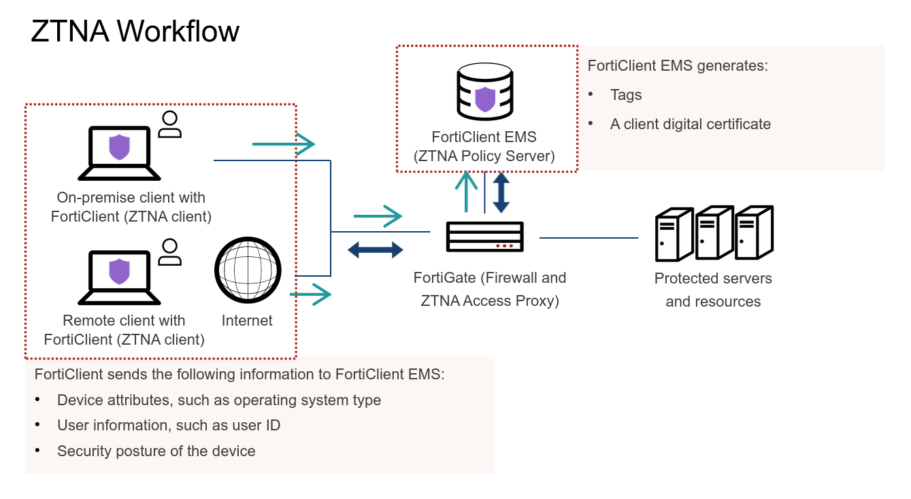
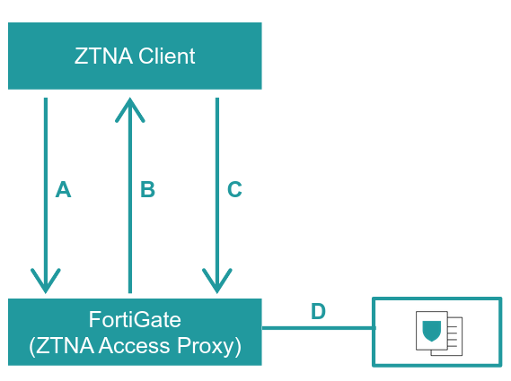
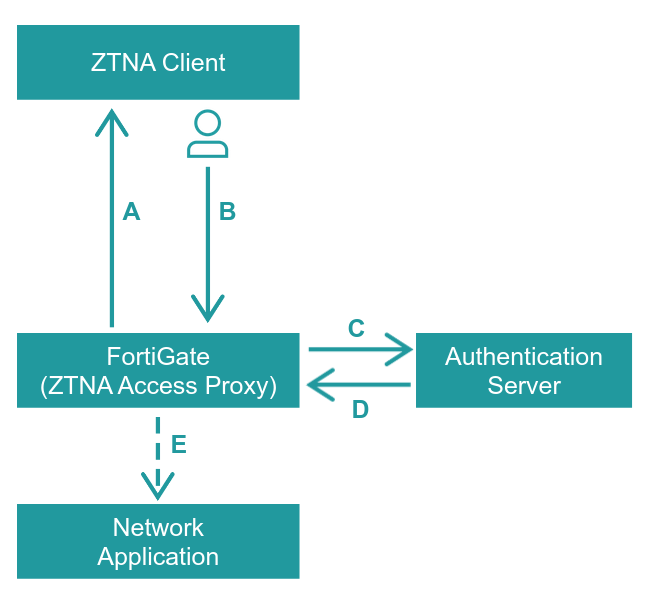
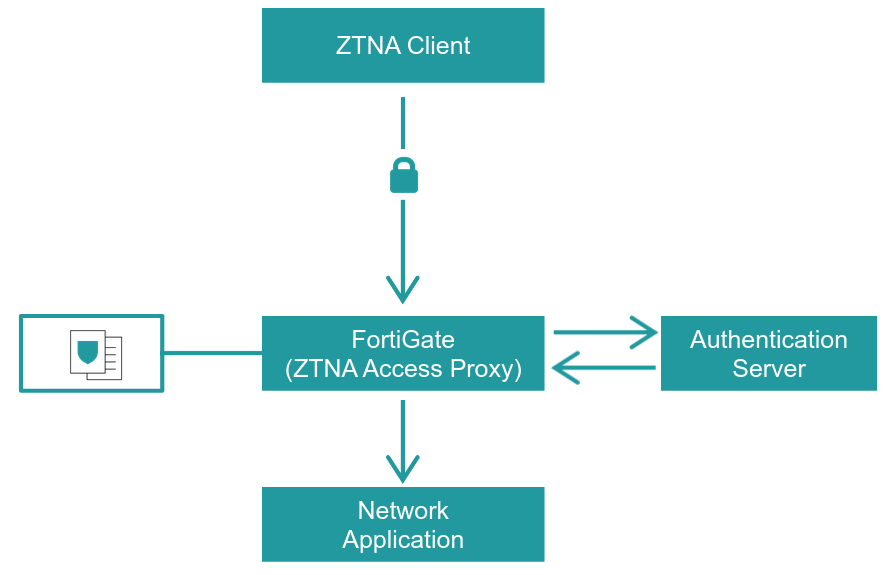

ZTNA
2022/08/02 - 04:42:11 PM - Tuesday
ZTNA
- Zero Trust Network Access
In this lesson, we will explore secure remote access and why it's important.
Secure Remote Access => It is a combination of security methods and technologies that allow outside end entities to connect to networks, without compromising digital assets or exposing networks to unauthorized parties.
Remote Access is secured using the following features =>
Data Privacy: A state in which information is concealed from the public and privy only to select people.
Data Integrity: The accuracy and consistency of data over its life cycle.
AAA => Authentication, Authorization, Accounting
Authentication: The process of verifying the identity of a person or thing.
Authorization: The function of specifying access rights to resources.
Accounting: The record keeping and tracking of agent activities on a computer network.
Most Common Secure Access Methods =>
IPsec VPN: Internet protocol security virtual private network
SSL VPN: Secure Socket Layer Virtual Private Network
ZTNA: Zero trust network access (which incorporates the principle of zero trust)
Comparing ZTNA to VPN =>
VPN: A VPN is a private connection across a public network that enables a user to exchange data safely with a private network as if the computing device was directly connected to the private network. Main components: client, server and protocols. Use cases: secure remote access and site-to-site.
ZTNA: It applies the Zero Trust principal which is no user or device whether it is inside or outside of a network is trusted. It has enhanced security.

How Does Fortinet ZTNA Work?
Step 1 -> Device Identity Validation
a. The Endpoint connects to the ZTNA access proxy
b. FortiGate challenges the endpoint foe device identification
c. Endpoint sends its certificates to FortiGate, which was previously issues by FortiClient EMS
d. FortiGate applier the tags and rules associated with the device.

Step 2 -> User authentication
a. FortiGate asks endpoint for user authentication
b. User sends their credentials on the endpoint
c. FortGate forwards the creds to the authentication server (could be an AD, LDAP directory, a database or IDaaS)
d. The user's identity is validated and its roles are retrieved from the authentication server
e. The roles are used by FortiGate to determine access to the network application

Step 3 -> Encrypted Session is established
